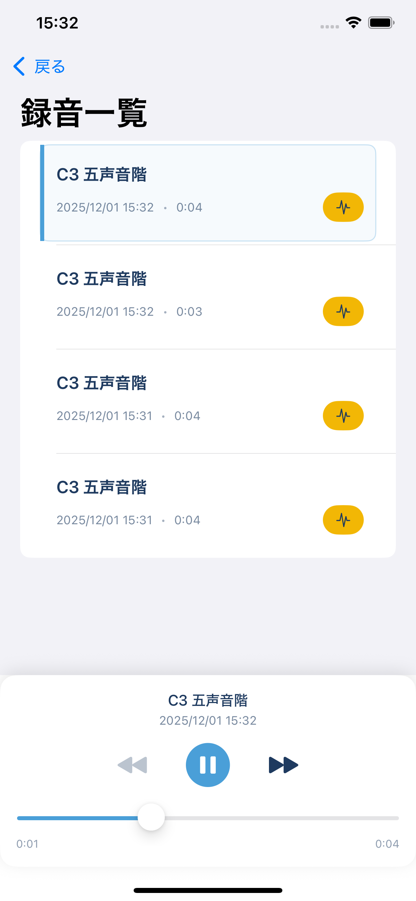
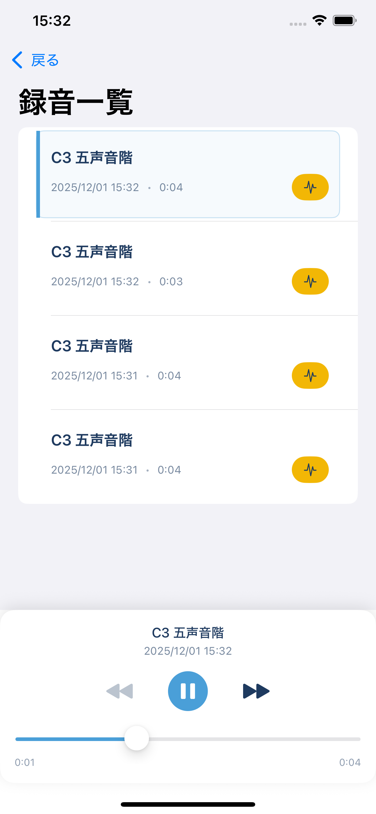
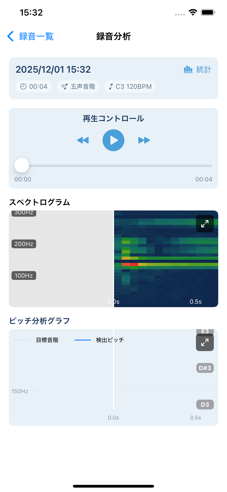
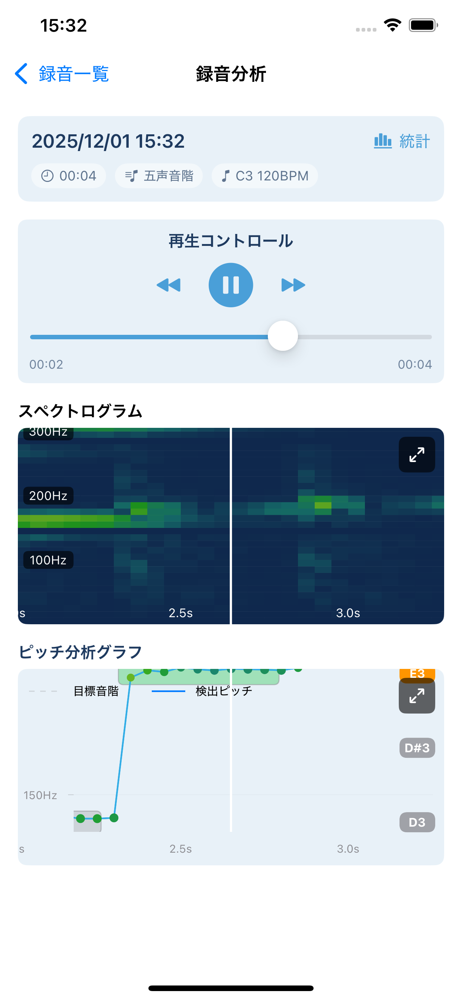

歌声を、データで理解する。
スケール再生に合わせて録音し、リアルタイムでピッチを可視化。シンプルで正確な練習ツール。
iOS 15.0+
多言語対応
StoreKit 2

スケール再生に合わせて録音し、リアルタイムでピッチを可視化。シンプルで正確な練習ツール。
設定したスケールパターンに合わせて自動再生と録音を開始。カウントダウン後にシームレスに練習へ。

スペクトルとピッチインジケーターで、音量と音程の変化を即時に可視化。セント単位のズレ表示にも対応。

スケール種類、開始ピッチ、テンポ、進行パターン、上下行の回数と間隔を調整可能。
SCREENSHOTS
録音 → 一覧 → 分析まで、迷わない導線で設計。
日時・キー・スケール情報つきで自動整理。選択してすぐ再生・分析へ。
 

スペクトログラムとピッチグラフで、目標スケールと検出ピッチの差を確認。
 ¥0
¥500/月
自動更新サブスクリプション。いつでもキャンセル可能。
SPEC